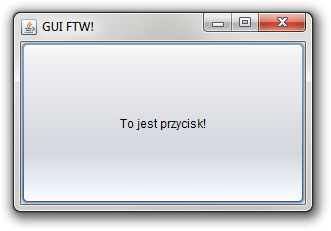

Niech się stanie GUI FTW!
Ponieważ bardzo lubię programowanie deklaratywne brakowało mi od dawna czegoś deklaratywnego do tworzenia GUI. Kod tworzący GUI jest zawsze bardzo nudny i powtarzalny: “stwórz obiekt, ustaw jego tekst, ikonę, dodaj akcję na klik (wcześniej stwórz obiekt implementujący odpowiedniego listenera), ew. stwórz obiekty-dzieci, bla bla bla”.
Projektanci stron internetowych od początku mają do dyspozycji HTML i CSS, które są jak najbardziej deklaratywne w swojej naturze. Dodatkowo treść określa się osobno od tego jak ma wyglądać. Model ten zaczyna wychodzić poza przeglądarki, np. XAML w .NET albo pliki layoutów w Androidzie. Wszystkie znane mi do tej pory tego przykłady opierają się na XML-u i dodatkowym programie generującym kod w trakcie kompilacji.
Ostatnio pracuję nad podobną biblioteką dla Clojure. Są jednak dwie główne różnice:
- Tak jak dla programistów Javy naturalnym językiem do opisu danych jest XML tak dla programistów Clojure tym językiem jest Clojure.
- Moja biblioteka jest jedynie biblioteką, nie wymaga dodatkowych programów generujących (powiedzmy) kod Javy z XML-a.
Ad 1. Składnia Clojure to tylko struktury danych: listy, wektory i mapy o wybornej składni. Grzechem byłoby używać w takiej sytuacji XML-a. Całe parsowanie robi za mnie Clojure więc mogę martwić się już tylko znaczeniem tego co siedzi w środku. Zarówno drzewo GUI (analogia do HTML) jak i style (CSS) definiowane są za pomocą kodu w Clojure.
Ad 2. Dzięki magicznym technikom metaprogramowania (makrom) mogę wchodzić w drogę kompilatorowi Clojure i generować kod tuż przed kompilacją zamiast generować kod programem i dopiero potem wywoływać kompilator. Dlatego całą funkcjonalność można spakować do pliku jar i używać jak każdej innej biblioteki. Ułatwia to także programowanie interaktywne z użyciem REPL.
Co, gdzie, jak?
Teraz nieco więcej o samej bibliotece. Nazwałem ją GUI FTW! a pobrać
ją można stąd: http://github.com/santamon/GUIFTW. Jest dostępna
także na Clojars więc wystarczy dodać
[guiftw "0.1.0-SNAPSHOT"] do zależności projektu aby jej
użyć. Polecam poeksperymentować z przykładami w katalogu
src/guiftw/examples,
które są również mocno obkomentowane w formie tutoriala.
GUI FTW! nie jest kolejnym toolkitem obok SWT i Swinga — jest deklaratywną nakładką na nie. Tzn. GUI FTW! można używać do tworzenia interfejsów używając jednego albo drugiego pod spodem. Do tego zostało napisane na tyle abstrakcyjnie, że można łatwo dopisać obsługę kolejnego toolkitu. Ułatwi to przesiadkę programistom Javy, którzy znają jedno albo drugie. Poza tym, pisanie kolejnego toolkitu nie jest po prostu celem tego projektu.
Banalny przykład
Strukturą GUI jest drzewo, którego węzeł składa się z nazwy klasy, listy właściwości oraz z jego węzłów-dzieci.
(def window
(swing
[JFrame [:title "GUI FTW!"
:visible true]
[JButton [:text "To jest przycisk!"]]]))
Wewnątrz listy cech można używać dowolnych nazw, które mają swoje
settery w danej klasie. Np. :title tłumaczone jest na wywołanie
metody setTitle, :default-close-operation na
setDefaultCloseOperation itd.
Aby zdefiniować style osobno musimy nadać elementom identyfikatory:
[JFrame [*id :okno-ftw]
[JButton [*id :przycisk-omg]]]
a osobno w tzw. arkuszu stylów zdefiniować cechy obiektów:
(def sheet
(stylesheet
[:okno-ftw] [:title "GUI FTW!"
:size ^unroll (300 200)
:visible true]
[:przycisk-omg] [:text "To jest przycisk!"]))
Składnia styli składa się z par list: najpierw lista identyfikatorów,
druga lista jest listą właściwości jak poprzednio. ^unroll jest
potrzebne dla setterów, które mają więcej niż jeden parametr. Lista
poprzedzona ^unroll zostanie rozwinięta na wszystkie jego parametry
zamiast wywołać setter z listą jako parametrem. Czyli otrzymamy
odpowiednik setSize(300, 200) zamiast setSize((300, 200)).
Makro swing zwraca funkcję, która utworzy chciane GUI, więc window
będzie funkcją. Parametrami tej funkcji jest ew. obiekt nadrzędny
(jeśli nie tworzylibyśmy okna tylko jakiś podrzędny element, może być
nil) oraz dowolna ilość arkuszy styli. Utworzenie okna będzie więc
wyglądało tak:
(window nil sheet)

Arkuszy może być więcej, możemy także podać inny komplet. Możemy też utworzyć wiele okien wywołując powtórnie tę funkcję. Zwrócony zostanie element na korzeniu drzewa.
Analogiczny przykład w SWT użyłby klas specyficznych dla SWT i przede
wszystkim makra swt zamiast swing.
Co dalej
Zacząłem pisać dokumentację. Jest dostępna w kodzie bądź przez doc w
REPL-u. Przydałaby się też dokumentacja on-line w stylu tej dla samego Clojure.
W tym momencie można stworzyć GUI, ostylować go i podpiąć zdarzenia (o czym będzie następny wpis). Brakuje całej części “stanowej”, w szczególności wyciąganie z drzewa interesujących nas elementów. Mam również pomysł, by podpinać wartości (np. tekst pola tekstowego) dwustronnie pod clojure'owe atomy, refy, agentów itp. Pozwoliłoby to na spięcie GUI i np. pamięci transakcyjnej.